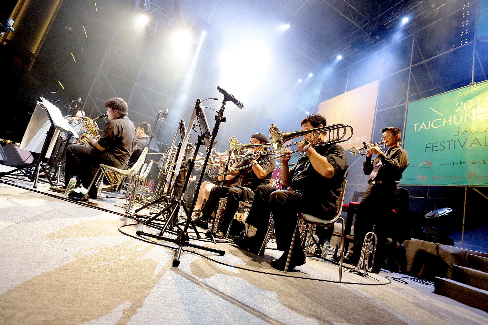
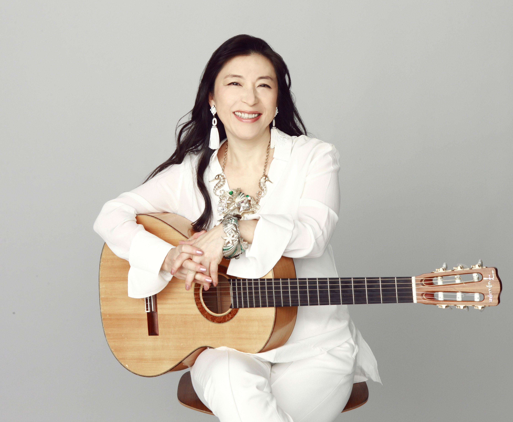

磅礡管樂夜
日期：04月21日（六）
地點：中壢中正公園
奧尼斯爵士大樂團
奧尼斯爵士大樂團(ONYX Jazz Big Band)成立於 2005 年,由團長 李承育率領國內知名爵士音樂家們所組成;奧尼斯爵士樂團的演出曲目以爵士樂經典作品為主,同時也不定期發表團員作品。此除,奧尼斯爵士四重奏也致力於爵士音樂教育及推廣,團員曾擔任 2005~2006 華岡國際音樂節,2006~2017 年台中爵士音樂節等爵士音樂講座講師等,並且陸續於中山大學、台南藝術大學、東華大學、清華大學、中華大學、大同大學、以及政治大學等大專院校演出。在企業演出方面,2007~2008 年於仁寶電子、統寶電子、學學文創志業等地舉辦各類音樂會。2007 年 7 月由喜馬拉雅唱片發行首張專輯【Reliance】。

爵士美聲天后‧小野麗莎
小野麗莎（小野リサ，Lisa Ono），日裔巴西女爵士樂歌手，出生於巴西聖保羅。自從1989年出道以來，便以其自然的歌聲，充滿節奏感的吉他音樂，在日本拓展巴薩諾瓦（Bossa Nova）曲風。她並曾與巴薩諾瓦之代表人物安東尼奧·卡洛斯·裘賓、爵士森巴樂的巨匠喬安·多那托（João Donato）等共同創作不少作品，以及在紐約、巴西以及亞洲等地舉行演唱會。她的曲風深受艾拉·費茲潔拉、法蘭克·辛納屈（Frank Sinatra）、史坦·蓋茲（Stan Getz）以及邁爾士·戴維斯影響，混合了森巴、爵士樂、詩歌、獨特吉他節奏的熾熱風格。現今被譽為日本巴薩諾瓦界的第一樂手。
